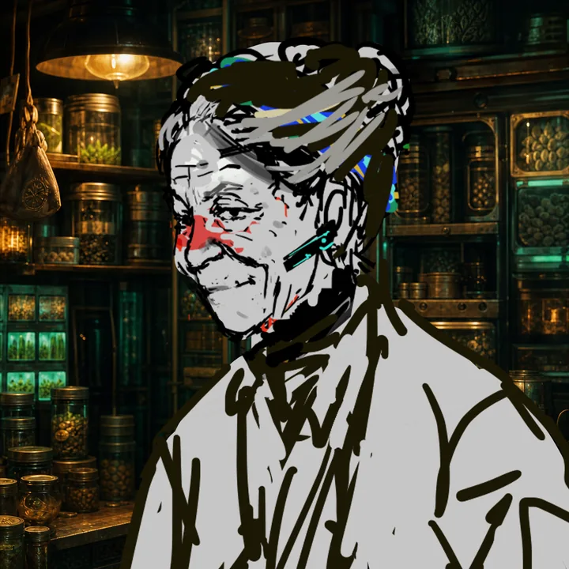

栽培区画
TOOLBOX
BLACK MARKET EXCHANGE
闇市場
LIVE QUOTESTODAY UNIT / B QUALITY
HARVEST INVENTORY
SELECT STOCK TO SELL
LOWNET RUMOR CALENDAR
月間スケジュール
MONTHLY GRID聞き取った噂の一覧
PROCUREMENT TERMINAL
調達端末
接続先廃棄区画 NODE-17

ENCRYPTED VENDOR // MARA
種ブローカー「マラ」
「種は記憶だよ。育てられる者にだけ、旧世界は芽を出す。」
ILLEGAL PROPERTY EXCHANGE
不動産ブローカー
UTILITY SPACE BROKER // KIDO
地下不動産仲介人「キド」
管理局の台帳から消えた空間だけを扱う。物件名、面積、契約条件は訪れるたびに変化する。
AUDIO CONSOLE
ラジオ
NOISE CONTROL環境音レイヤー
RADIO CHANNELSCSVで番組追加
ROBOT WORKFORCE CONTROL
労務管理
START SIGNAL UNROUTED
ARCHIVE / FIELD NOTES